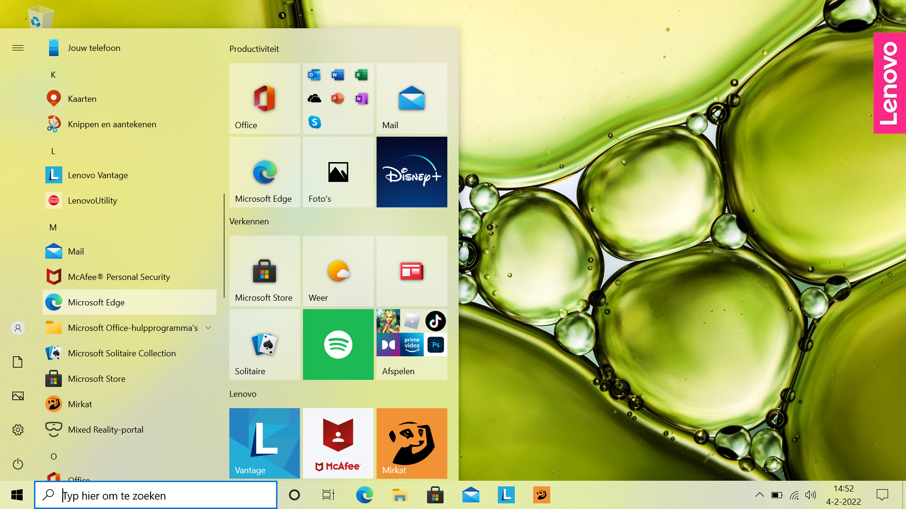

Goals of the course
- getting acquinted with computer
- getting acquinted with computerterms
- learning to ask the right question
- learning to search for computerhelp
Goals for lesson 1
- Start-up Lenovo laptop
- Hardware vs. software
- Surfing internet
- Text processing
- Finding your files
Getting acquainted
Liesbeth Glas

Theo den Blanken
- Cecilia
- Theresa
- Seth Cephas
- Olive Betty
- Linda
- Marian
Startup your laptop
choose user with your own name
and MicroSoft Edge 


Practice to use your mouse/trackpad
Be aware of:
- moving mouse-pointer
- clicking = left-click = selecting
- right-click (for options)
- dragging (with mouse-down
Link to training mouse game
Excercise with 2 Edge-windows
- If not: open Edge en go to: https://all-saints.netlify.app/introles1#slide=10
- Add a tab in Edge and go to https://stin.to/en
-
Make sure your window is not maximised.
Make it smaller by dragging its right edge. - Drag one of the tabs out of Edge: there you have 2 seperate windows.
- Divide them on your screen and show it the teacher
Multiple ways to start Notepad
(and other programs of course)
- Navigate Start > Accessoires > Notepad
- direct from startmenu a tile Kladblok
- placing an icon in the taskbar
- making a shortcut on the desktop
Want to see this on an English Windows OS: https://www.youtube.com/iGBnPyj1RZE
Excercise: Tile startmenu
- create a tile for MS Word in your startup menu and in your taskbar
- create a tile for Kladblok in your startup menu and in your taskbar